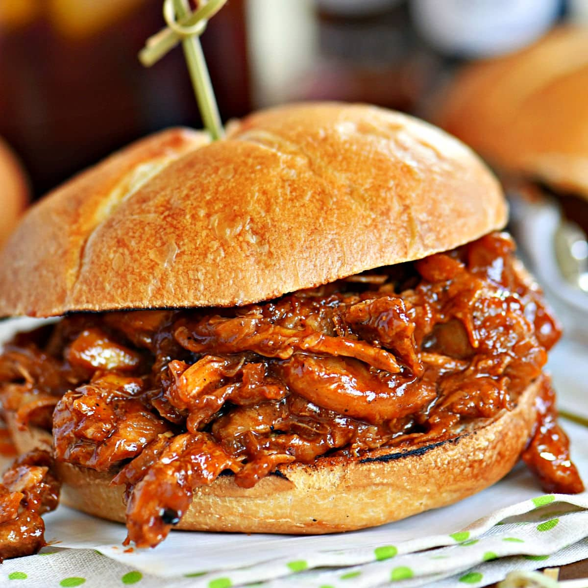

Chicken Tikka Masala
Try this slow cooked smoky chicken as an easy alternative to pulled pork. It's best served in a bun or with rice, and makes a simple dish for a family meal!

This crockpot pulled chicken is so easy to make – everything just goes into the slow cooker without any special prep. It’s fall-apart tender, juicy and delicious.
The preparation time is 5 minutes and the cooking time is 6 hours and 15 minutes.
Ingredients
- 2 tbsp vegetable or rapeseed oil.
- 10 to 12 boneless, skinless chicken thighs.
- 2 red onions, halved and sliced.
- 2 garlic cloves, crushed.
- 2 tsp paprika.
- 2 tbsp chipotle paste.
- 250ml passata.
- 100g barbecue sauce.
- 1 tbsp light brown soft sugar.
- 1 lime, juiced.
- Burger buns, taco shells, jacket potatoes or rice; coriander leaves; deseeded and sliced chillies, and guacamole, to serve (optional).
Once the ingredients have been prepared you are ready to move on to the cooking.
Method
- Heat the slow cooker to low and heat 1 tbsp oil in a pan. Brown the chicken in batches, transferring it to the slow cooker as you go. Add the remaining oil to the pan and fry the onions for 5 minutes, or until just softened, then stir in the garlic and paprika and cook for another minute. Tip into the slow cooker, then swirl 100ml water around the pan and pour this in as well.
- Add the chipotle, passata, barbecue sauce, sugar and lime juice, then season and stir. Cover and cook for 6 to 8 hours until the chicken is really tender. Using two forks, shred the chicken through the sauce. Serve in buns, taco shells, jacket potatoes or over rice, with coriander leaves, chillies and guacamole, if you like.